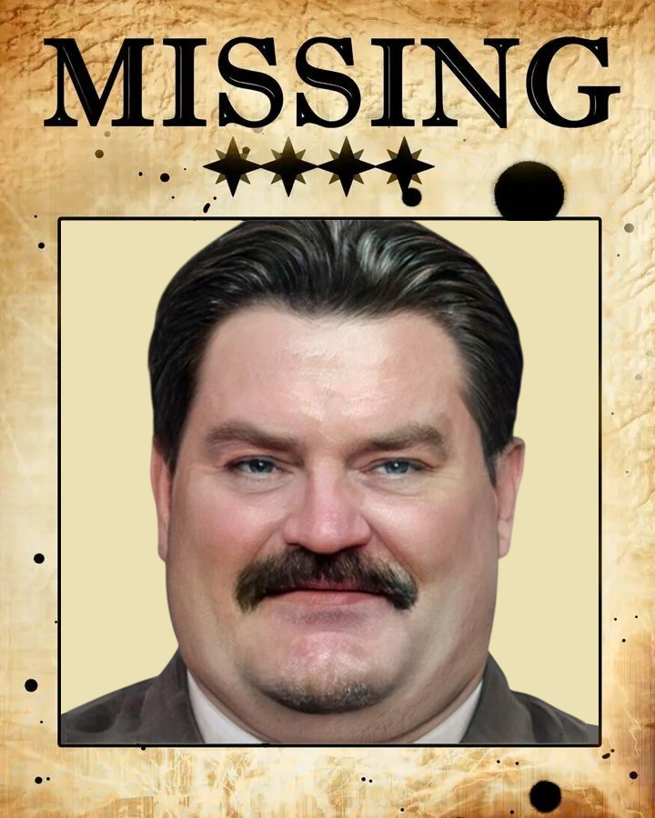
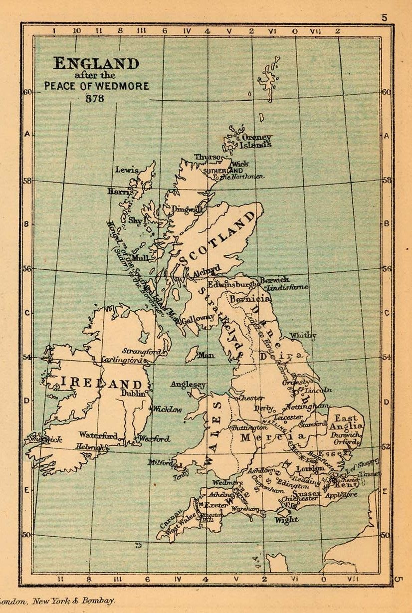

Who murdered Mr. Finch? A detective's tale of broken traditions

Mr. Finch, a wealthy Australian tourist, was found lifeless in one of London hotels. The Scotland Yard suspects four distinguished gentlemen, each from a different corner of the United Kingdom. Sir Finch disrespected ancient traditions of each region, and one of them decided to take justice into his own hands.
Your task is to interrogate the suspects, solve their riddles, and collect evidence. As each clue is revealed, a piece of the hidden portrait will be unveiled. Only when all four clues are gathered, you may name the killer.
Click on any marker to interrogate the suspect

Each solved riddle reveals a piece of the killer's emblem